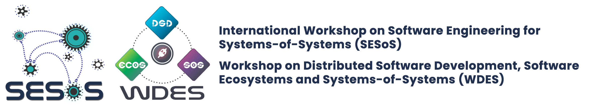

Systems-of-Systems (SoS) have become increasingly complex and frequently used in highly distributed, dynamic, and even open environments. SoS refer to evolving software systems, where constituent systems (themselves systems in their own right) work cooperatively to fulfill specific, complex missions, facing software engineering researchers and practitioners with substantial challenges.
In parallel, Software Ecosystem (SECO) has also become an important research topic in software engineering, addressing social issues along with technical aspects of software development. SoS and SECO are closely related, also naturally distributed so as the distribution of development teams, along with the inherent difficulties of coordination and communication.
In this scenario, Distributed Software Development (DSD) deals with distributed resources to reduce cost and reach new IT markets. Inherent problems and challenges of software engineering are thus amplified and become more critical when those three topics need to be analyzed together.
SESoS/WDES provides researchers and practitioners a forum to exchange ideas and experiences, analyze research and development issues, discuss promising solutions, and propose theoretical foundations for development and e volution of complex systems, inspiring visions for the future of software engineering for SoS, SECO, and DSD and paving the way for a more structured community effort.
| Year | Edition | Location | Website | Proceedings |
|---|---|---|---|---|
| 2026 | 14th International Workshop on Software Engineering for Systems-of-Systems and Software Ecosystems | Rio de Janeiro, Brazil | Website | Proceedings |
| 2025 | 13th International Workshop on Software Engineering for Systems-of-Systems and Software Ecosystems | Ottawa, Canada | Website | Proceedings |
| 2024 | 12th International Workshop on Software Engineering for Systems-of-Systems and Software Ecosystems | Lisbon, Portugal | Website | Proceedings |
| 2023 | 11th International Workshop on Software Engineering for Systems-of-Systems and Software Ecosystems | Melbourne, VC, Australia | Website | Proceedings |
| 2022 | 10th International Workshop on Software Engineering for Systems-of-Systems and Software Ecosystems | Pittsburgh, PA, USA | Website | Proceedings |
| 2021 | Joint 9th International Workshop on Software Engineering for Systems-of-Systems and 15th Workshop on Distributed Software Development, Software Ecosystems and Systems-of-Systems | Virtual (originally in Madrid, Spain) | Website | Proceedings |
| 2020 | Joint 8th International Workshop on Software Engineering for Systems-of-Systems and 14th Workshop on Distributed Software Development, Software Ecosystems and Systems-of-Systems | Virtual (originally in Salvador, BA, Brazil) | Website | Proceedings |
| 2019 | Joint 7th International Workshop on Software Engineering for Systems-of-Systems and 13th Workshop on Distributed Software Development, Software Ecosystems and Systems-of-Systems | Montréal, QC, Canada | Website | Proceedings |
| 2018 | 6th International Workshop on Software Engineering for Systems-of-Systems | Gothenburg, Sweden | Website | Proceedings |
| 12th Workshop on Distributed Software Development, Software Ecosystems and Systems-of-Systems | Madrid, Spain | Website | Proceedings | |
| 2017 | Joint 5th ICSE International Workshop on Software Engineering for Systems-of-Systems and 11th Workshop on Distributed Software Development, Software Ecosystems and Systems-of-Systems | Buenos Aires, Argentina | Website | Proceedings |
| 2016 | 4th International Workshop on Software Engineering for Systems-of-Systems | Austin, TX, USA | Website | Proceedings |
| X Workshop on Distributed Software Development, Software Ecosystems and Systems-of-Systems | Maringá, PR,Brazil | Website | Proceedings | |
| 2015 | 3rd International Workshop on Software Engineering for System-of-Systems | Florence, Italy | Website | Proceedings |
| IX Workshop on Distributed Software Development, Software Ecosystems and Systems-of-Systems | Belo Horizonte, MG, §Brazil | Website | Proceedings | |
| 2014 | 2nd International Workshop on Software Engineering for System-of-Systems | Vienna, Austria | Website | Proceedings |
| VIII Workshop on Distributed Software Development, Software Ecosystems and Systems-of-Systems | Maceió, AL, Brazil | Website | Proceedings | |
| 2013 | 1st International Workshop on Software Engineering for System-of-Systems | Montpellier, France | Website | Proceedings |
| VII Workshop on Distributed Software Development | Brasília, DF, Brazil | Website | Proceedings | |
| 2012 | VI Workshop on Distributed Software Development | Porto Alegre, RS, Brazil | Website | Proceedings |
| 2011 | V Workshop on Distributed Software Development | São Paulo, SP, Brazil | Website | Proceedings |
| 2010 | IV Workshop on Distributed Software Development | Salvador, BA, Brazil | Website | Proceedings |
| 2009 | III Workshop on Distributed Software Development | Fortaleza, CE, Brazil | Website | Proceedings |
| 2008 | II Workshop on Distributed Software Development | Campinas, SP, Brazil | Website | Proceedings |
| 2007 | I Workshop on Distributed Software Development | João Pessoa, PB, Brazil | Website | Proceedings |